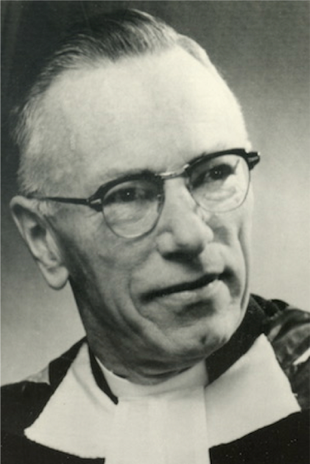

-1-MasterItem.svg)
Stories of Westminster United Church & its People / Page
144
My father was an active and ambitious United Church Minister when
he received “a call” to become minister at Westminster Church, Winnipeg.
It was November of 1948 when the actual move took place. The family
consisted of wife Mildred, and four children: Rolph, who preceded the rest
of us to start University earlier in the fall, Charles who enrolled in Gordon
Bell high school, Mary in grade 7 at Laura Secord, and Don in grade 2
at Mulvey School. It was quite a mob.
For the next 8 years, Allen served the congregation of Westminster
diligently and well. I am not sure of the numbers, but sometimes it was
a little difficult to find a seat on Sunday mornings. On special occasions
like Easter Sunday there were 2 morning services. And through much
of his tenure there was a regular Sunday evening service, where
the sermon related more towards on-going social issues.
He became well known for his imaginative “children’s sermons” which were at least as popular
with adults as with children.
Allen worked hard on his messages. He had a study in the manse, which in turn
was located
immediately next to the church. He would be typing his sermon notes right up to
10 minutes
before the service, then dash for the back door of the church where the choir
was assembling before
entering the sanctuary. Some of his sermons were printed in a book entitled
Not Bells, But Trumpets
.
He was a good preacher. His sermons were scholarly, somewhat but not overly
theatrical, and
delivered with firmness. He was also a devoted minister to the flock of 17 or 18
hundred members.
He took a live interest in the various organizations in a congregation of that
size.
He was a hard worker. He made ministerial visits to encourage prospects to
become active members
of the congregation. He faithfully visited the shut-ins, the ill and the
elderly. He had the great benefit
throughout his tenure at Westminster of a charming wife, who was quick to make
lasting friends and
who was the perfect chatelaine of the manse at 120 Maryland Street (pictured).
(For those who may
Table
of Contents

Rev. Allen R. Huband